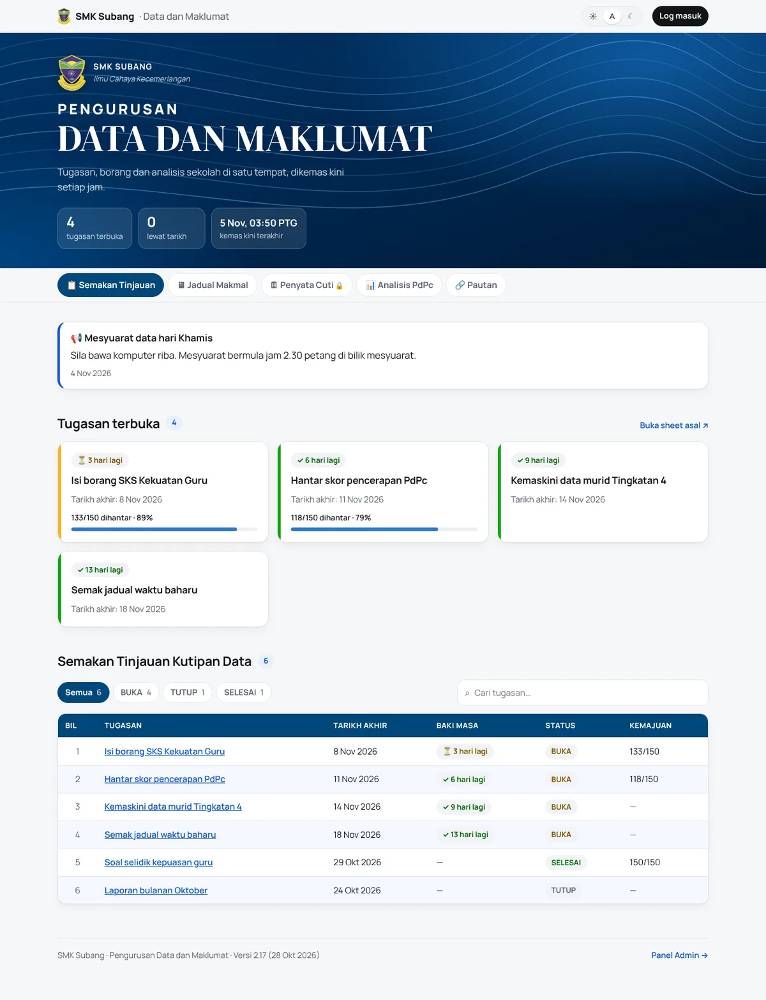
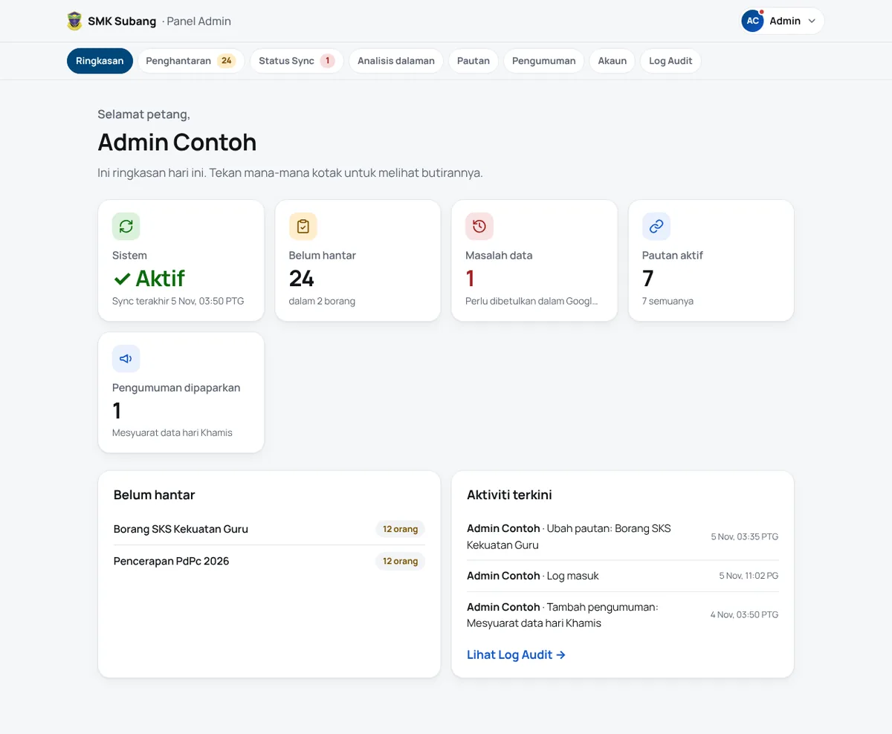
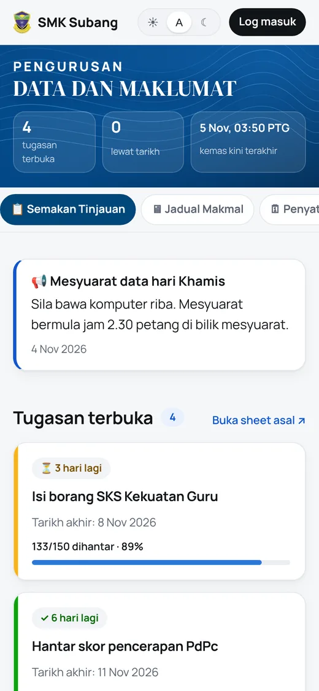
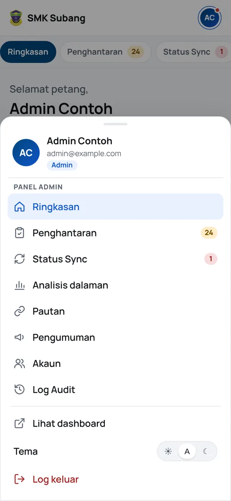
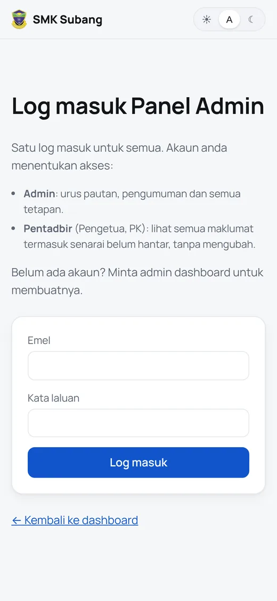
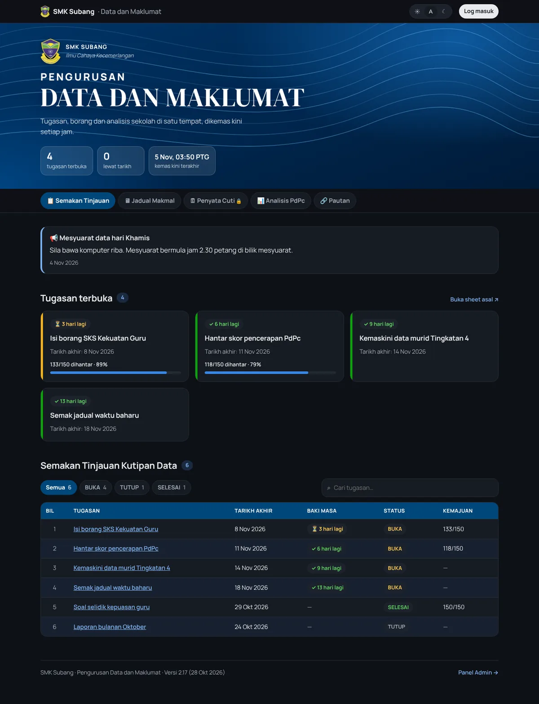

SMK Subang's data manager ran the whole school through a page of seven links and one huge spreadsheet called SEMAKAN. About 150 teachers clicked through to Google Sheets to find what was due, deadlines got missed, and chasing who hadn't submitted meant scrolling through 150 names. I built them one dashboard instead. It's in use every day, mostly on phones.

Don't make anyone change how they work
The easiest way to get 150 busy teachers to use something new is to not ask them to change anything. So the spreadsheets stay the source of truth. People keep editing the same Google Sheets and Forms they always have, every view links back to its sheet, and the dashboard just reads them every hour.
Who sees what
The public page is open to anyone. Names of teachers who haven't submitted, leave data and the audit log are only for the principal and the data manager.
| Public | Principal | Data manager | |
|---|---|---|---|
| Dashboard, counts, charts | ✅ | ✅ | ✅ |
| Who hasn't submitted, leave summary | ❌ | ✅ | ✅ |
| Sync status, audit log | ❌ | ✅ | ✅ |
| Edit links and announcements | ❌ | ❌ | ✅ |
| Manage accounts and roles | ❌ | ❌ | ✅ |

Privacy, at every layer
Teachers' names and leave records are personal data under Malaysia's PDPA, so I didn't want privacy to depend on one check somewhere. Each layer assumes the one before it might fail.
Two details I'm happy with. Teachers check their own leave through a personal secret link instead of typing an IC number, which is easy to guess. And new admins never get a password from me: they get a one-time link, valid for 24 hours, sent through Telegram, the app the teachers actually use. The database stores only a hash of it.
Messy data, fixed at the source
Real data is messy. One score column had 9,286 in a 0 to 100 field, and some tasks were still marked open weeks after their deadline. Instead of quietly cleaning it, the sync flags each problem with its sheet and row so the data manager fixes it where it came from, and leaves bad scores out of the averages until then. Words like "belum respons" count as pending, and teachers on leave aren't counted as missing.
Built for phones first



Most teachers open it on a phone, and early on the header alone took 600 pixels before a single task showed. Version by version it got tighter:
| Version | What changed |
|---|---|
| 2.14 | One-time set-password links instead of passwords pasted into chats |
| 2.15 | Instant view switching, card layouts instead of sideways-scrolling tables, a compact phone header |
| 2.16 | The school crest as the home-screen icon |
| 2.17 | One account menu at the top right for both the public page and Panel Admin |
Every change ships with a short "what's new" note in plain Malay, inside the app.

What I took away
- The user guide shaped the UI. Writing the teachers' guide in plain Malay shaped the screens as much as the code did.
- Keeping the spreadsheets made adoption easy. Nobody had to learn a new place to type things.
- Privacy is a design decision, not a feature. It's much easier to build in on day one than to bolt on.
The public copy of the code, with school details removed, is on GitHub.